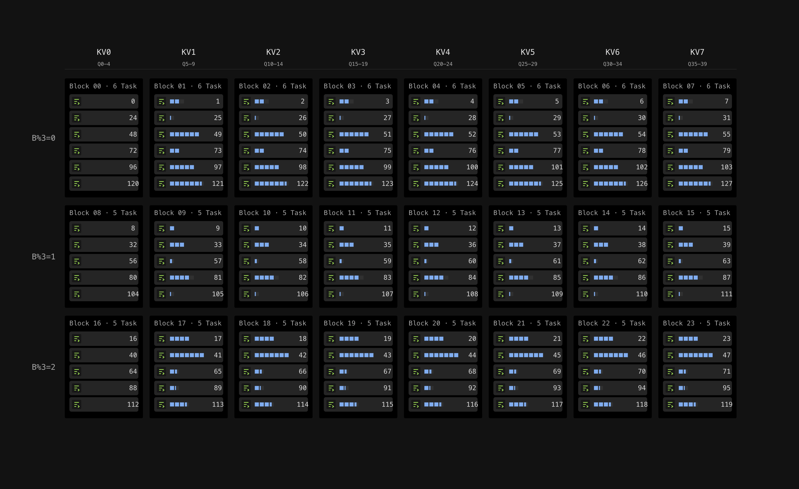
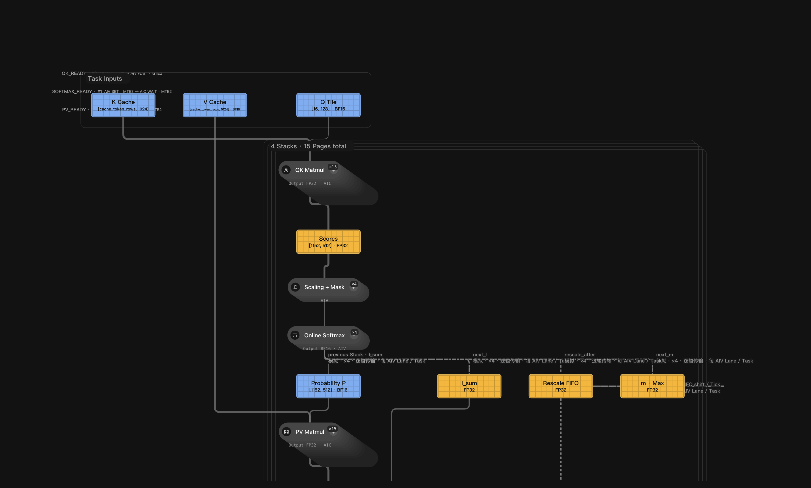
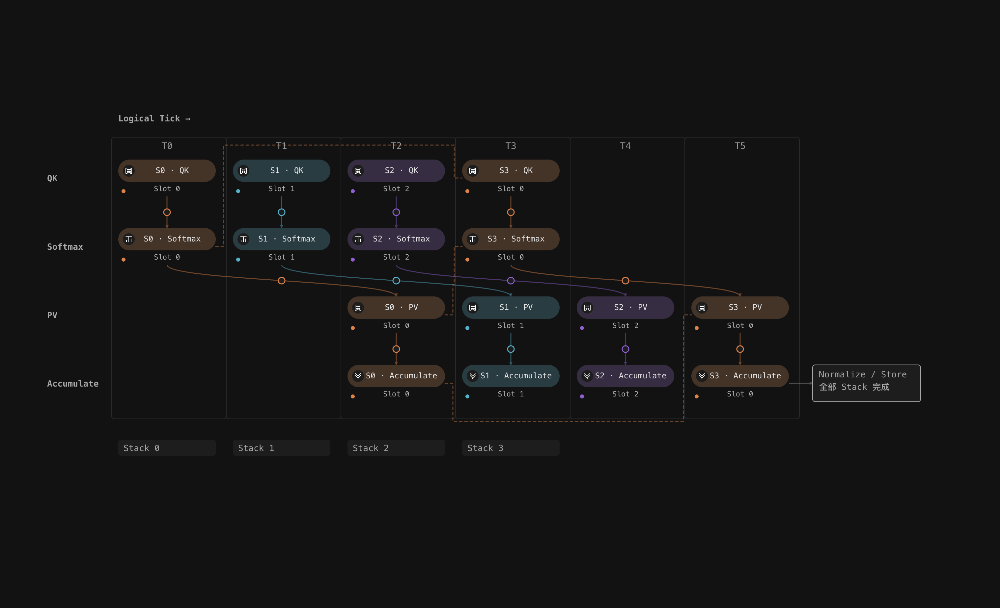
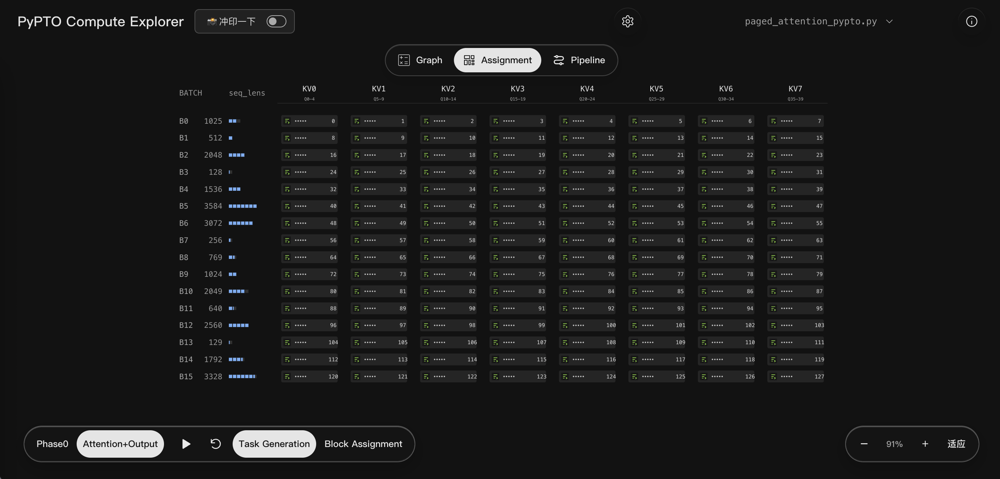

算子代码
- AI 生成根据需求生成的实现候选
- 示例代码从文档或开源示例改写
- 已有算子资产复用团队或算子库的实现
- 框架迁移算子从其他框架移植的实现
接手已有代码，先弄清它怎样执行
- 计算关系究竟做了什么？识别运算及其依赖
- 数据切分工作如何拆分、分配？推导数据范围和任务归属
- 执行时序这些工作怎样协同？推演先后顺序、等待与重叠
有限的硬件资源
- 计算单元由哪些单元执行
- 存储空间中间结果放在哪里
- 数据搬运数据怎样在存储和计算间流转
- 通信与同步执行单元怎样交接和协同
设计切入点：建立从代码结构到计算执行的统一解释路径
把离散的实现细节，组织成可探索、可追踪、可验证的计算关系
01数据 / Assignment多级并行调度的空间化映射
03时间 / Pipeline执行流水的动态演绎
从空间、结构和时间理解一次计算
Assignment任务分配到哪里？

快速定位每个 Task 的归属。
Graph一次计算怎样展开？

再从 Task 深入 Stack 和 Page。
Pipeline各工序如何交接？

看清数据交接和 Slot 复用。
建立计算现场
参数定义
128
一页有 128 token
Page4
一堆有 4 页
Stack128 × 4 = 512
一堆有 512 token
Stack计算推导
Seq_len ÷ 128
一次计算任务有多少页？
Task · 向上取整Seq_len ÷ 512
一次计算任务有多少堆？
Task · 向上取整022
BLOCK_SIZE = 128023
STACK_PAGES = 4024
STACK_TOKENS = STACK_PAGES * BLOCK_SIZE⋯
264
seq_len = pl.read(seq_lens, [batch])265
page_count = (seq_len + BLOCK_SIZE - 1) // BLOCK_SIZE266
stack_count = (seq_len + STACK_TOKENS - 1) // STACK_TOKENS😨 没有输入，缺少“计算现场”，难以带入结果
主动计算推演

打开 Compute Explorer ↗